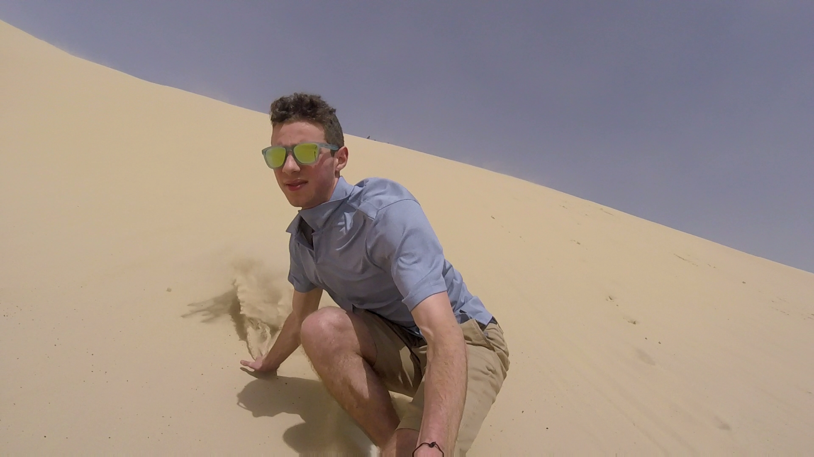
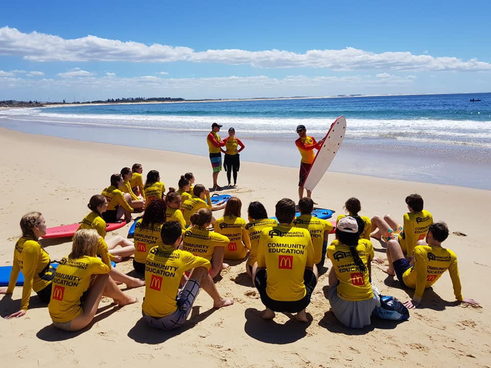
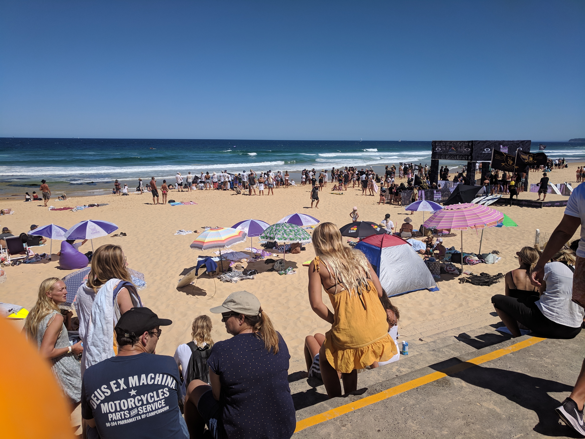
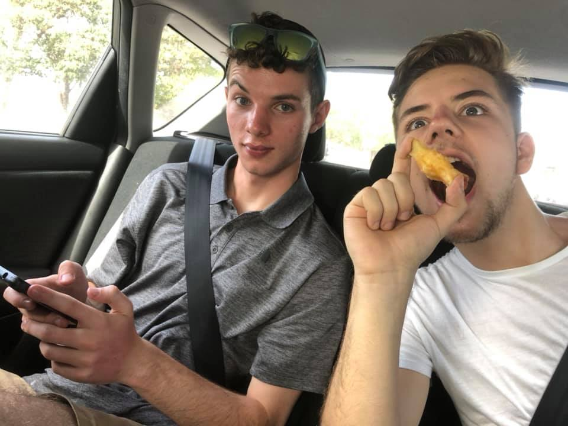

Lifestyle
Australia, Mozambique, Zimbabwe, Austria, Germany, France, Czech Republic, Sweden, Belgium, Poland, Denmark, United Kingdom, Canada, Fiji, Japan, Nepal, Bhutan and last, but not least, America.
After 20 years of relative isolation, my first week in the International House has been an eye opening experience. It is easy to look out from the US and say, “Of course Poland is different, that’s Europe. “ or “Swedes don’t speak English, I can’t even understand them .” Rather than try to learn about why they are different, we are only acknowledging that they are. It takes people, names, and friends to start to look past that.
Making so many international friendships isn’t a cakewalk either. Luckily, the University of Newcastle was excellent at providing chances and activities to meet new people, domestic and international. One of the first adventures I undertook around Newcastle was sand dune surfing at Anna’s Bay, just outside the city. After an off road trek through the dunes, we arrived at a crater. After some brief instruction we jumped straight in. Battling against the sandblasts, drawing blood at times, the surfers and snowboarders climbed to the steepest trailhead. While most people rode down the slopes on a slide, just a handful of people chose to ride the hill standing. After many tumbles, almost all of us tamed the slope.

Even without the school organizing events, there were still plenty of opportunities to hang out with other people. A short bus ride down the road, Newcastle is home to a half dozen world class beaches. Merriweather, in particular, is exceptionally well known for its surf. In the tail end of summer, the beach has been a haven. With waves over ten feet tall at times, I’m not sure I will ever adjust to the beaches back in the US.
  
After attending all of these events, meeting so many people, I think I’ve learned my first lesson. While it is always nice to know that I can hang out with someone from Iowa (Shoutout to Haley), its not what I travelled to do. Talking to Australians especially, and experiencing their culture, you can tell just how much more relaxed their lives are. America is always “go go go”, a world where you have leap from one accomplishment to another in search of fulfilment. To us, happiness has always been promised to the externally successful: CEO’s, Doctors, Engineers, Lawyers. For some people, that might be true. Either way, most people felt the pressure to perform, to excel.
Coming to Australia, this first week has been one of the most relaxed of my life. There are a handful of events per day, and after that people play life by ear. Head to the beach, go grocery shopping, or maybe go out on the town. One night, I said to a friend “Australians are so much more chill than the US, this is the most relaxing week I’ve ever had.” He looked at me like I was crazy. For him, orientation week at university was the most stressful time of his life.
Our conversation went much further, but that interaction set the tone. In Australia, there is no competition for who is better than the next person, not in your GPA or degree, not in anything. You post pics because they are funny, not to show off where you are on vacation or your food.
Without travel, without meeting and reaching out to all of these people, that’s something you never would have realized. Sure Australia is so far away that it must be different, but that will never help you until you know why its different. Until you can see, for example, that there is more than one way to live your life.